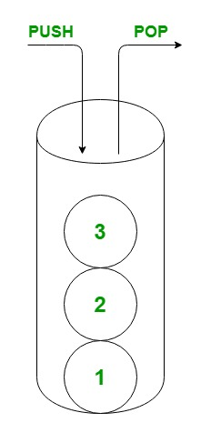

Лекція 11
Обирайте колекцію за типом доступу, а не ту, що першою спала на думку.
Сьогодні ми не повторюємо generics, а зосередимося на тому, як вам обрати правильну структуру даних.
List<T>, а не застарілий ArrayList чи List<object>.HashSet або SortedSet, і для яких задач ідеально підходять Stack та Queue.Беріть список, коли вам важливий порядок елементів, ви хочете звертатися до них за індексом, і колекція буде рости. Але якщо ви шукаєте за ключем — List вам не підійде.
List<string> dirs = new(Directory.EnumerateDirectories(docPath));
foreach (var dir in dirs) Console.WriteLine(Path.GetFileName(dir));Словник — це швидкий пошук значення за унікальним ключем.
Equals та GetHashCode завжди мають бути узгоджені.static int HashFunction(string s, string[] array) {
int total = 0;
foreach (char c in s) total += c;
return total % array.Length; // дуже спрощений приклад хеш-функції
}Ці колекції стануть у пригоді, коли вам потрібна лише множина унікальних елементів.
HashSet гарантує унікальність, але не зберігає порядок. Зате ви миттєво зробите математичні операції: об’єднання (union), перетин (intersect) чи різницю (except).
SortedSet теж зберігає лише унікальні елементи, але одразу сортує їх за зростанням. Вставка сюди обійдеться вам дорожче, зате ви завжди маєте відсортований набір.
Це дві класичні структури для ваших специфічних задач.

Stack працює за принципом LIFO (останній зайшов — перший вийшов). Він ідеально підійде вам для скасування дій (undo) або обходу в глибину (DFS).
Queue — це FIFO (перший зайшов — перший вийшов). Використовуйте його для черги задач, обходу в ширину (BFS) або фонових робіт.
stack.Push(x); var y = stack.Pop();
queue.Enqueue(x); var z = queue.Dequeue();Завжди задавайте собі питання: як саме ви будете з нею працювати?
List<T>.Dictionary<TKey,TValue>.HashSet<T>. А якщо елементи мають бути ще й відсортовані — беріть SortedSet<T>.Stack<T>. А для принципу «перший зайшов — перший вийшов» вам знадобиться Queue<T>.Після лекції
У наступних лабораторних роботах свідомо обирайте колекцію за типом доступу: чи потрібен вам індекс, ключ, унікальність, LIFO чи FIFO. Не пишіть List просто за звичкою.
І пам’ятайте: ми сьогодні не чіпали generics і boxing, адже ви розібралися з цим ще на лекції 02.